Calidus
A stability chamber, designed around the people who run it.
fewer assembly steps, from 15 down to 5
Result · LabIndia stability chamber
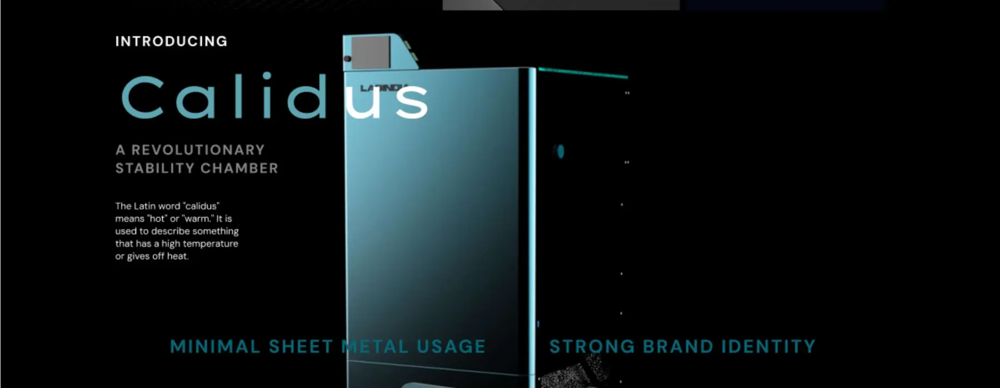
When a chamber fails, months of drug-stability data fail with it.
Challenge
Design a reach-in medicine stability chamber that controls temperature and humidity for pharmaceutical testing, complies with industry standards, and is reliable and easy to use for researchers and technicians.
Research
On-site interviews with factory workers and repair technicians, 24 photographed pain points, a root-cause analysis, a journey map and a task analysis.
Outcome
Calidus: assembly cut from 15 steps to 5, a 970 mm footprint (vs ~1,300 mm), easier repair and wire management, and a redesigned 6-screen HMI.
I started by understanding the machine itself (chassis, impeller, cooling and heating coils, water tanks, compressor) and the eight steps it takes to go from “place samples on racks” to “fan distributes conditioned air evenly”. Then I went to watch people use it.
24 photos. 24 problems nobody had written down.
On site, I interviewed factory workers and repair technicians, and documented every friction point I could see or that they mentioned: dead space on top, heavy back panels, a confusing UI, visible hinges, surfaces that are hard to clean, non-uniform airflow, lost insulation, sliding racks, bad lighting, confusing interiors, and no strong brand identity.
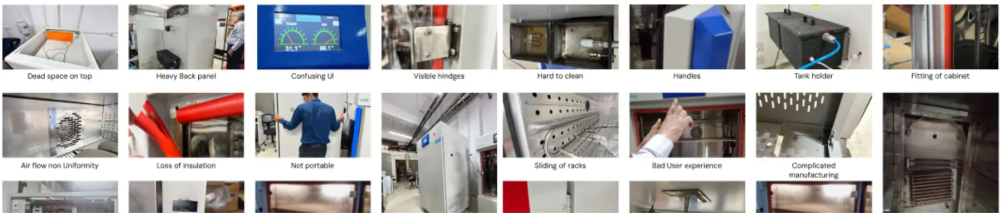
From symptoms to root causes.
For ten recurring issues (temperature fluctuations, humidity control, airflow, calibration, condensation, contamination, power failure, data logging, sample handling and equipment malfunction) I traced the limitation, the challenge it creates and its root cause. Many “technical” failures turned out to be human ones: lack of training, unclear protocols, poor maintenance cues.
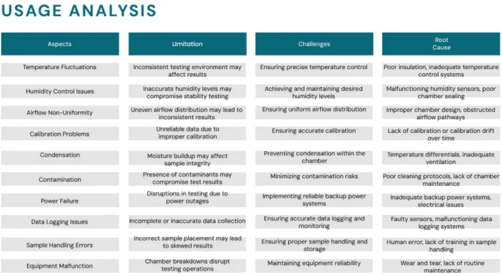
A technician's journey, end to end.
Preparing samples → setting up the chamber → loading → programming parameters → monitoring and recording → periodic inspection and maintenance → analysing stability data → documentation → storing retained samples → continuous improvement.
Mapping it showed that the chamber is touched at almost every stage, and that monitoring is where attention (and anxiety) peaks.
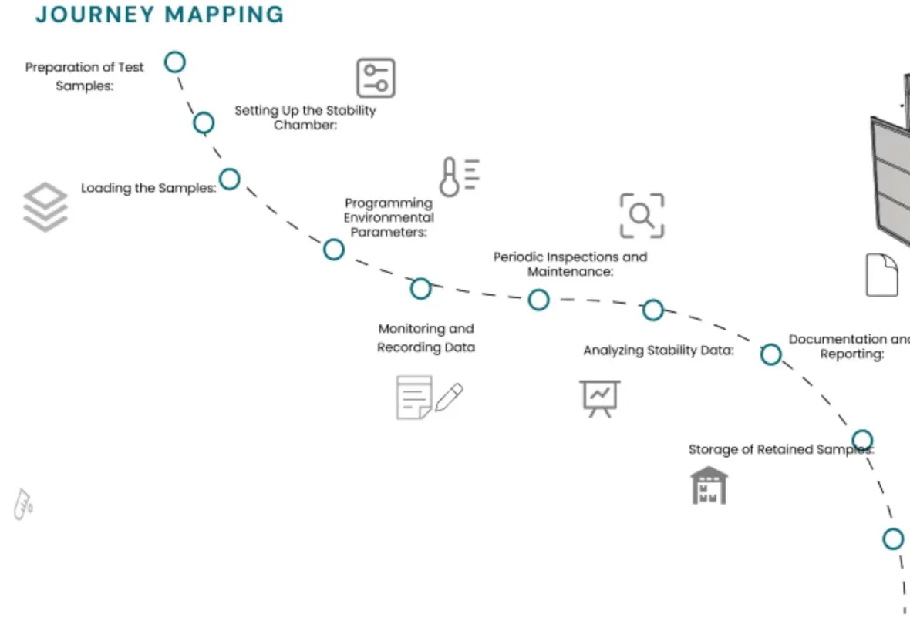
Where effort, attention and error pile up.
For each core activity I mapped physical load, cognitive load, emotional state, likely errors, their impact and root cause. Pick an activity to explore:
Set-up is where experiments get ruined.
A confusing HMI leads to wrong temperature and humidity settings, compromising the whole study.
A redesigned HMI flow: start → login → adjust (sliders) → alarms → data.Observation is constant, low-grade stress.
Technicians have to stay alert for small fluctuations that aren't easy to see.
Alarms and scheduled checks instead of relying on someone watching gauges.Cleaning and maintenance are an afterthought.
Dead spaces, visible joints and awkward draining make chambers hard to keep clean.
Redesigned dismantling and wire management, fewer joints, and front-access drawers. Assembly went from 15 steps to 5.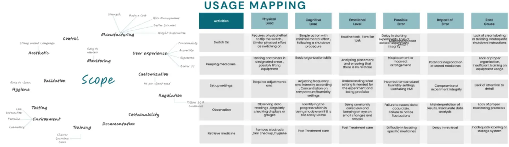
Global, local, parallel and alternative.
I benchmarked 10 global and 10 local chamber brands, parallel products (walk-in rooms, incubators, freeze-thaw chambers) and alternative testing techniques, to find where the category looked identical and where there was room to stand out.
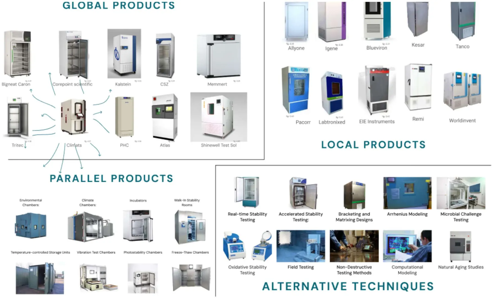
Three directions, scored against the research.
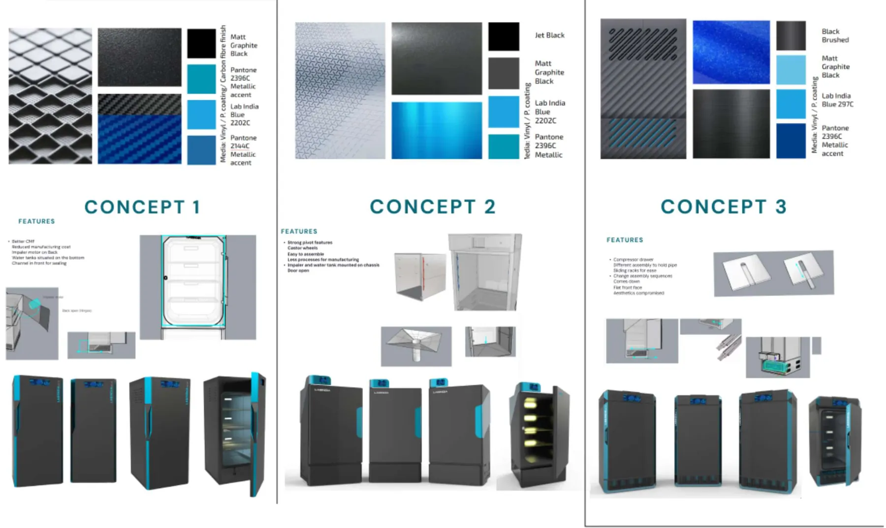
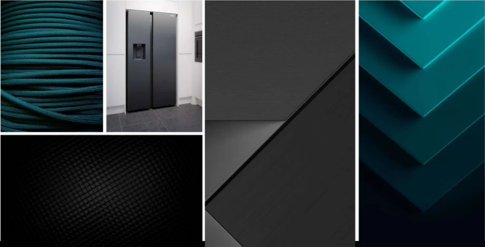
Calidus: Latin for “warm”.
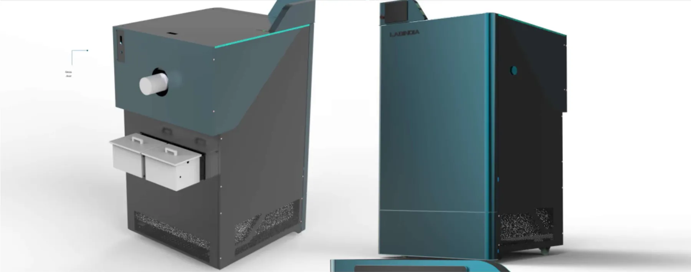
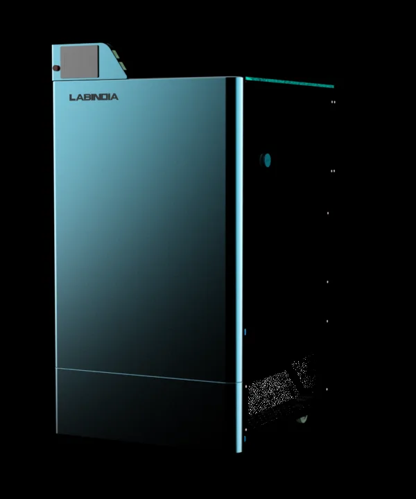
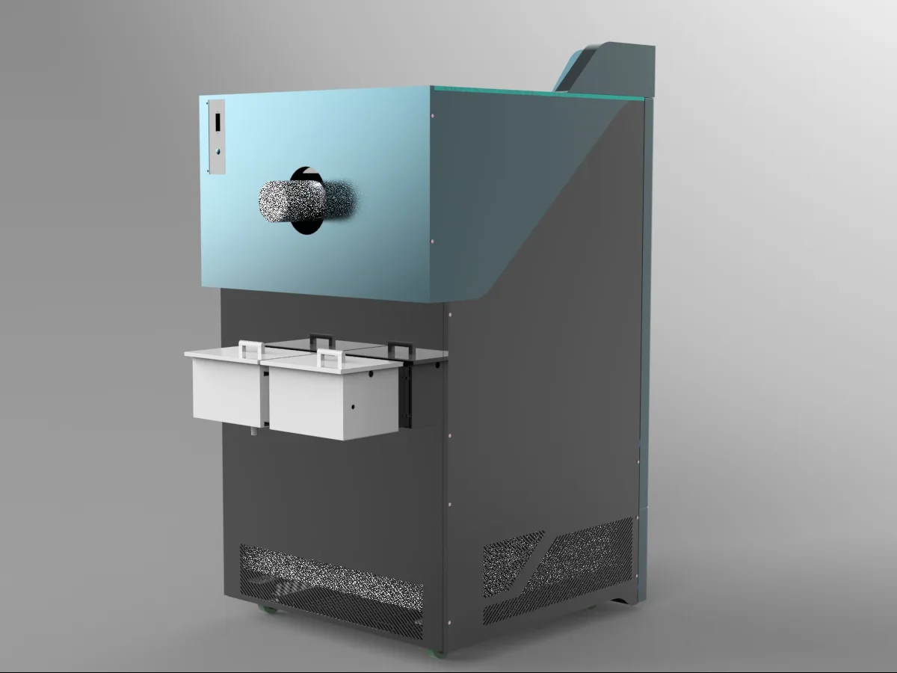
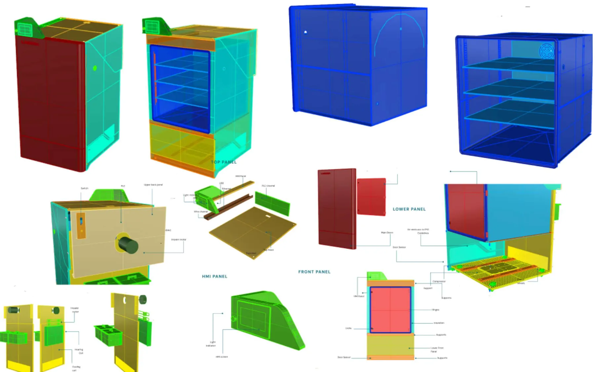
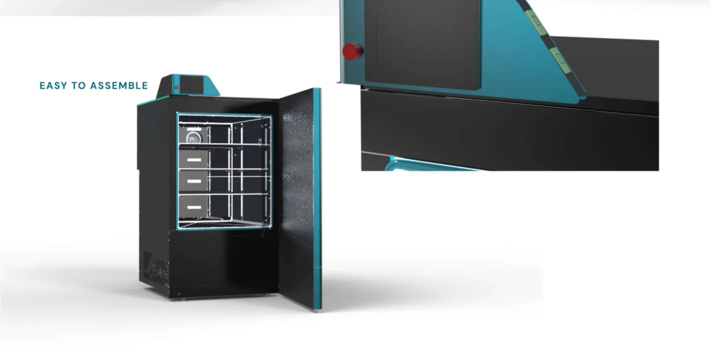
HMI redesign
The screen is where set-up errors happen, so I redesigned it around the task flow: a start screen, login, a home with three clear actions, slider-based temperature and humidity adjustment, alarms and a data table.
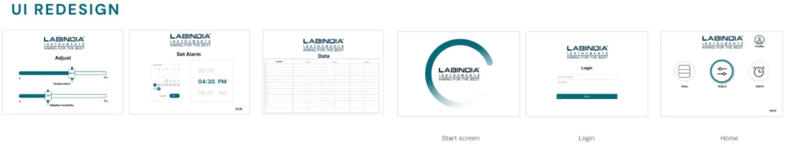
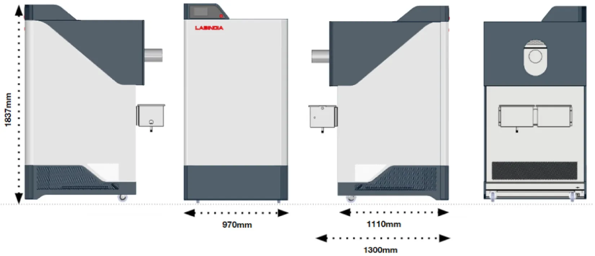
What this taught me about research.
The expensive failures were human. I came in expecting engineering problems. The root-cause analysis kept pointing to labelling, training and monitoring, which are design problems.
Next time I'd usability-test the HMI with technicians using a clickable prototype, and measure set-up time and error rate against the existing interface.
Godrej →